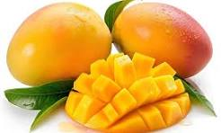
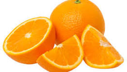
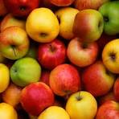
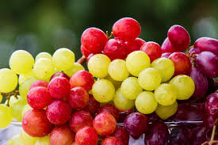

Mango, known as the “king of fruits,” is a delicious and nutritious fruit loved by people of all ages. Rich in vitamins, minerals, and natural sweetness, mangoes are perfect for eating fresh, making smoothies, desserts, or juices. In our store, we offer fresh, high-quality mangoes that are juicy, flavorful, and handpicked to ensure the best taste. With vibrant images showcasing their bright color and freshness, our mangoes are sure to delight every customer and bring a taste of summer to your home.

Oranges are a fresh and juicy fruit, packed with vitamin C and natural sweetness, making them perfect for a healthy snack or refreshing juice. In our store, we offer high-quality oranges that are handpicked to ensure maximum freshness and flavor. Their bright color and vibrant taste make them a favorite for families looking for nutritious and delicious fruit options. With clear images of our oranges, customers can easily see their quality and enjoy the goodness of nature in every bite.

Apples are one of the most popular and nutritious fruits, known for their crisp texture and natural sweetness. Packed with vitamins, fiber, and antioxidants, they make a perfect snack, addition to salads, or ingredient for desserts. In our store, we offer fresh, high-quality apples that are carefully selected to ensure the best taste and freshness. With clear and vibrant images of each apple, customers can easily choose the perfect fruit to enjoy healthy and delicious treats every day.

Grapes are a sweet and juicy fruit, loved for their refreshing taste and natural goodness. Packed with vitamins, antioxidants, and energy-boosting nutrients, they are perfect for snacking, desserts, or making fresh juice. In our store, we offer high-quality grapes that are fresh, plump, and handpicked to ensure the best flavor. With vibrant images of our grapes, customers can easily see their freshness and enjoy a healthy, delicious treat every day.